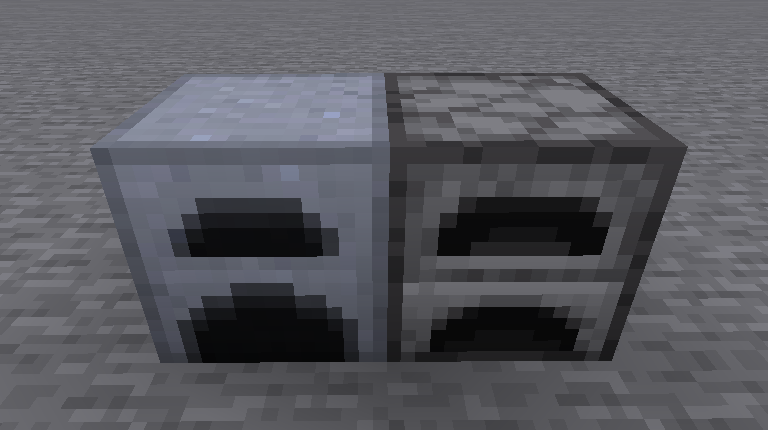
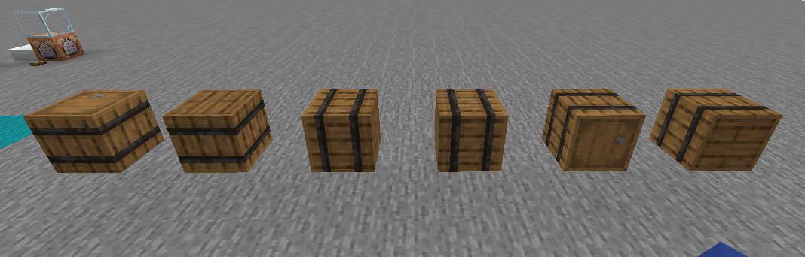
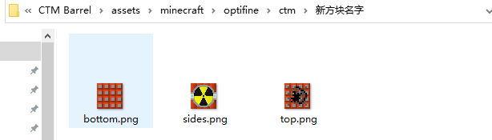
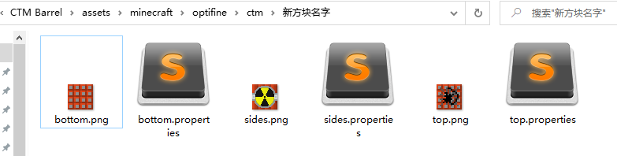
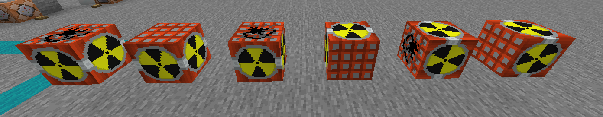

What is MNORPG?
Mavssive None Online Role-Playing Game(大型非在线角色扮演游戏)
MNORPG的设计思路与传统MMORPG最大的区别在于,MNORPG是一个不需要任何玩家参与仍然可以运行的游戏
如果你真想从零开发一个优秀的RPG Server,不妨好好看看该Wiki
具现化(具体实现化Concrete Realization Phenomenon)
在MNORPG游戏类型中,世界都必须围绕着这个运行
任何一个NPC说的一句话,任何一本书记载的位置,任何一个漂流瓶记载的事情
在游戏中都必须有所体现.举个例子,如果一把武器中的描述中有:该武器曾经是布鲁托铁匠使用过的
那么在服务器中,就必须要有布鲁托这个NPC,即便他死了
成长(成长的故事Adolescent Story)
要想把MNORPG的故事写的精彩,光是固定的剧情显然是不够的
每段故事如果能让NPC若有成长,这个故事就是精彩的
剧本这块要下大功夫并不容易,讲好各个角色的故事非常重要
服务器版本的选择
1:
在1.14以下的所有版本中,所有服务器都无法避免地图光照更新产生的黑块问题
尽管目前有光照更新修复等插件,诞生效果不尽人意
在使用optifine的清澈水体时,没有任何一款插件能修复水底光照问题
2:
1.14以下的版本杂且乱,1.14以下版本都无法做到超视距问题(服务器视距>10)
这对于RPG游戏体验是极大的破坏
3:
在1.13以下的版本缺少游泳动作,RPG的总体互动性会缺少一些该有的乐趣
海底BOSS的设计及潜水设计
4:
Minecraft目前最头疼的问题,1.15以下的所有版本中优化都是极其拉跨的(包括1.12)
以上几个原因,我们可以得出目前相对比较适合的游戏版本,1.15.2
视频中虽然说是1.14.4,但那是以前的视频
多线程处理的服务端非常重要
曾经我用过Spigot来运算上百个盔甲架,已经hold不住了
你可能会好奇,上百个那么多?给你打个预防针,上百个很正常
Skript的介绍
触发式、条件式和表达式(效果式)三个部分做到的
当打破方块时:
如果方块是玻璃:
掉落玻璃
on break:
if event-block is glass:
drop glass
学习Skript需要的准备
逻辑上的学习过程
同时它的容错率更高,格式要求也更加灵活
Sublime
 在使用Sublime打开
在使用Sublime打开.sk文件时
点击左下角纯文本→open all with current extension as...→Yaml
这样下次打开sk就以Yaml文本的形式打开了
Skript Hub进入并加入收藏夹
你前期能死磕的语法的地方只有sk hub,有大量的语法是存在例子的
 在我学习sk的时候,我记录不下千行的sk语句例子
这些例子在今天,我一样会经常翻阅
在我学习sk的时候,我记录不下千行的sk语句例子
这些例子在今天,我一样会经常翻阅
你的第一个自定义方块
非功能性方块:像石头,草方块,橡木木板这类不具备交互功能的方块
通常模型大小为1m³

功能性方块:像熔炉,切石机,灯笼这类具有独立GUI或特殊模型碰撞箱
 这也是本章会着重讲解的方块
你可以学会自定义方块材质自定义方块模型,自定义方块碰撞箱,自定义方块GUI及功能
本章里,你将会学习到optifine的ctm的自定义贴图,cit的自定义物品
如果你第一次接触optifine的这些功能,可以前往https://www.mcbbs.net/thread-782790-1-1.html粗略了解
这也是本章会着重讲解的方块
你可以学会自定义方块材质自定义方块模型,自定义方块碰撞箱,自定义方块GUI及功能
本章里,你将会学习到optifine的ctm的自定义贴图,cit的自定义物品
如果你第一次接触optifine的这些功能,可以前往https://www.mcbbs.net/thread-782790-1-1.html粗略了解
new_block即可使用
(只有亲自体验才能知道这篇里在讲什么)
要想利用ctm来自定义材质,首先第一要求就是必须拥有CustomName这个nbt
通过自定义某个容器的GUI名字,我们就可以用ctm来实现改方块的各面材质
就像下图,同是熔炉,,熔炉GUI名字不同,材质也随着不同

那么第一个问题就来了,既然那么多具有GUI命名的容器方块
如何选择最佳的那一个呢?在BV1fX4y1K78C这期视频开头里
我对比了刷怪笼自定义方块和盔甲架自定义方块的帧数(需要说明的是那个自定义方块原理和本篇是不同的)
视频里没有对比mspt(1tick需要多长时间运行,越低越好)是因为没有利用容器进行修改
在本WIKI里我将详细对比2种自定义方块的mspt情况(请不要追求极致去用唱片机来自定义)
木桶(barrel)30³ : mspt=3-4 fps=688/200-320
酿造台(brewing stand)30³ : mspt=6-7 fps=240/100
潜影盒(shulker box)30³ : mspt=3-4 fps=11/10
投掷器(smoker)30³ : mspt=3-4 fps=670/300
箱子(chest)30³ : mspt=6-7 fps=8/7
陷阱箱(trapped chest)30³ : mspt=3-4 fps=8/7
熔炉(furnace)30³ : mspt=3-5 fps=600/140
盔甲架(armor stand)30³ : mspt=500+ fps=0
通过以上mspt和fps的对比,当前版本下,空的木桶的综合考虑是最优秀的
木桶的放置朝向一共拥有6个,分别为上、下、左、右、前、后
在实际使用中,就拥有6种放置角度

再看看熔炉的放置朝向,仅有4个,分别为左、右、前、后
 根据你想要做的方块选择对应的载体(木桶/熔炉)
我建议大家选择木桶作为载体,要想禁止上下面到后面我会教用sk来阻止
根据你想要做的方块选择对应的载体(木桶/熔炉)
我建议大家选择木桶作为载体,要想禁止上下面到后面我会教用sk来阻止
 一个方块共有3个部分的贴图组成,分别是
一个方块共有3个部分的贴图组成,分别是top(顶部)、bottom(底部)、side(侧面)
要是你使用了熔炉作为载体,则还有front(前面),不举例
第一步:
在材质包/assets/minecraft/optifine/ctm/新方块名字/路径下放入刚才的3个贴图

第二步:
创建各个贴图对应的.properties文件

第三步:
编写.properties,填入以下信息
bottom.properties:
matchTiles=barrel_bottom
method=fixed
tiles=bottom
name=ces
sides.properties:
matchTiles=barrel_side
method=fixed
tiles=sides
name=ces
top.properties
matchTiles=barrel_top
method=fixed
tiles=top
name=ces
逐句分析:
matchTiles=<方块各面ID>
method=ctm / horizontal / vertical / top / random / repeat / fixed
tiles=<贴图对应.png文件>
name=<GUI名字判定>
你想更深入了解CTM可以去看看https://www.mcbbs.net/thread-103270-1-1.html
method的区别
ctm 标准的连接方式,任意方向上有相同方块连接时会出现效果,这有点类似于原版中的玻璃方块
horizontal 水平方向连接方式,水平方向有相同方块连接时会出现效果,也就是书架的效果
vertical 垂直方向连接方式,垂直方向有相同方块连接时会出现效果,可以用来做柱子的效果
top 顶部连接方式,当方块上方有相同方块连接时方块本身会出现效果。
random 随机材质,方块随机使用数个选定的材质
repeat 重复材质,方块连续使用选定的一定面积的材质
fixed 固定材质,方块固定使用一个选定的材质
第四步:
进入游戏用铁砧给木桶命名为ces
便可以得到以下方块
